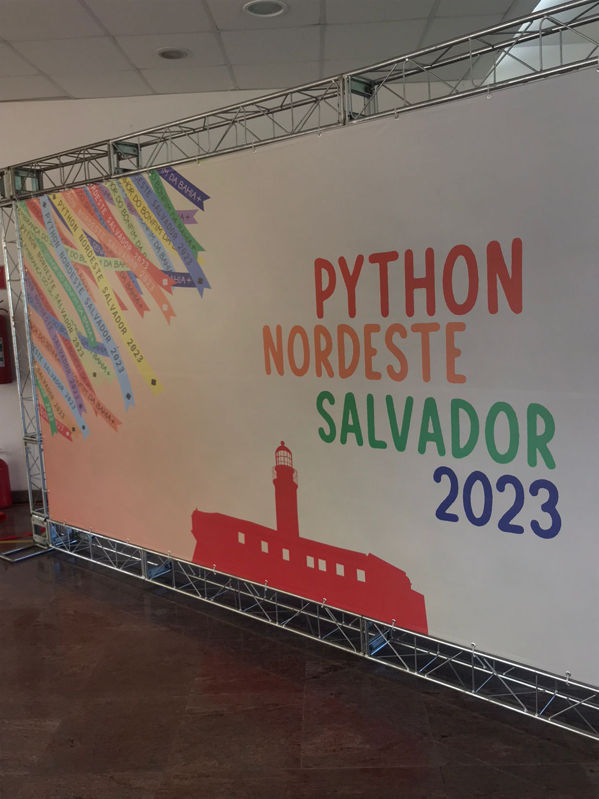
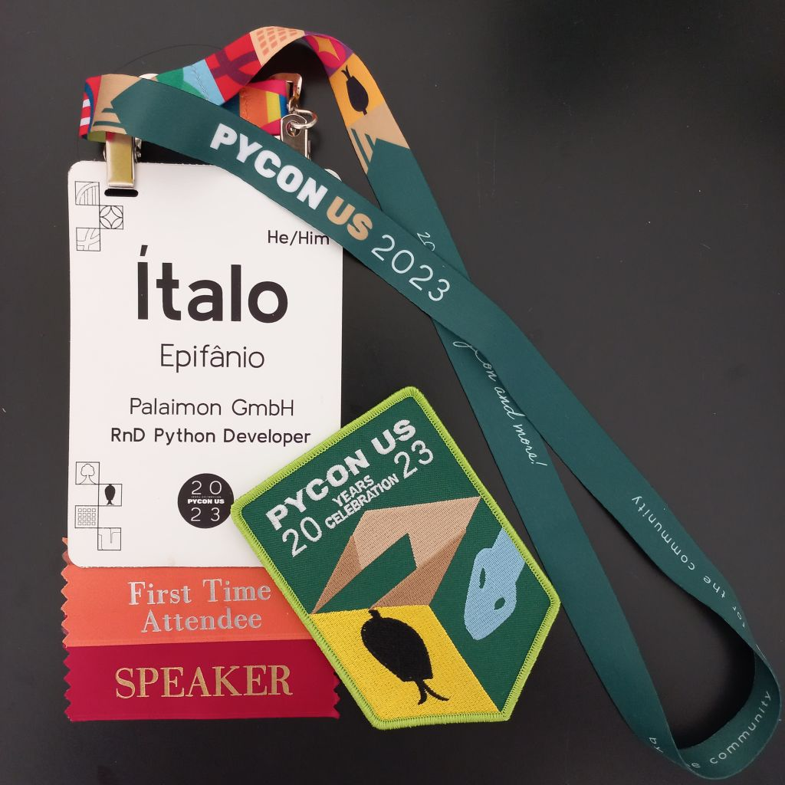
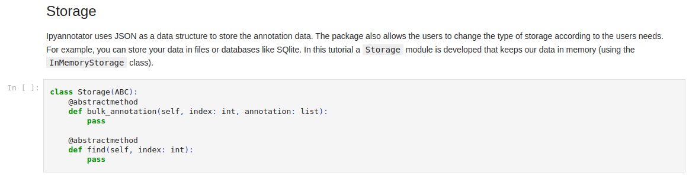

Bloguito
About
Talks
Projects
Awards
Categories
All
(15)
English
(6)
Portuguese
(9)
Meu ano de 2023
Portuguese
2023 começou com várias revisões do tutorial de três horas e meia que preparei para a PyCon US. Apesar de trabalhar há alguns anos para o exterior, foi uma experiência bem…
Jan 27, 2024
Ítalo Epifânio
The Rise of Python in Data Product Development: Exploring Solara
English
The emerging trend of tool-building for data scientists is manifestly by the immense traction PyScript gained within the tech community upon its initiation. This momentum…
Oct 17, 2023
Ítalo Epifânio

Revisitando a Python Nordeste 2023
Portuguese
A edição 2023 da Python Nordeste aconteceu na UFBA de Salvador nos dias 22 a 24 de setembro. Três dias coloridos com as fitinhas do Bonfim, imersos em Python & comunidade e…
Sep 26, 2023

PyCon US 2023
English
PyCon US is the largest annual convention for the Python programming language. The event took place from April 19 to April 27 in Salt Lake City, Utah. I was thrilled to…
Jul 11, 2023
Ítalo Epifânio
Enhancing Python Project Productivity: The Advantages of Mamba for Environment Management
English
The multitude of Python environments management choices can leave even senior Python developers unsure of the best tool usage. This article describes how Palaimon reduced…
Jul 11, 2023
Ítalo Epifânio
PyCon US 2023
Portuguese
PyCon US é a maior conferência anual da linguagem de programação Python. O evento aconteceu de 19 a 27 de abril em Salt Lake City, Utah. Fiquei feliz em contribuir com um…
May 7, 2023
2022 Recap
Portuguese
2022 foi um ano longo. O mercado de tecnologia começou a esfriar e até as grandes empresas começaram a demitir em massa, alguns amigos foram atingidos pelas demissões, mas…
Jan 1, 2023
2022 Recap
English
2022 was a long year. Tech market started to cool down and even some big techs started to layoff people, some friends got caught in the middle of this but were able to find…
Jan 1, 2023
Programação letrada com Jupyter Notebook e Nbdev
Portuguese
O ambiente de desenvolvimento Jupyter notebook é muito popular entre a comunidade científica. Com essa ferramenta você consegue escrever texto em formato markdown e código…
Aug 16, 2022

Literate programming with Jupyter notebooks + nbdev + Quarto
English
The Jupyter notebook development environment is very popular in the scientific Python community. With this tool you can write markdown and code in the same file, which can…
Aug 16, 2022
Objeto hashable em Python
Portuguese
Hash de objetos é uma representação númerica inteira que é obtida utilizando o dunder method
__hash__
. Compreender esse conceito ajuda a entender como as estruturas de dados…
Jul 24, 2022
Ítalo Epifânio
Meu ano de 2021
Portuguese
Uma revisão do meu ano de 2021. Pra mim foi um ano de tirar o mofo de algumas paredes: sai de um kitnet para um apartamento com dois quartos (um só pra escritório :) )…
Jan 3, 2022
Ítalo Epifânio
Lazy horizontal scroll
English
Recently I came across with the following scenario: a management software of workflows that allow the user to dynamic create its kanbans (like the one in the image below).…
Oct 23, 2021
Ítalo Epifânio
Carregamento lento com scroll horizontal
Portuguese
Recentemente me deparei com o seguinte cenário: um sistema de gerenciamentos de fluxos de trabalho que permite configuração de kanbans, como o da imagem abaixo, sendo que um…
Oct 23, 2021
Ítalo Epifânio
TALL - Uma nova stack para PHP
Portuguese
T
ailwind,
A
lpinejs,
L
aravel e
L
ivewire (
TALL
) é uma solução para desenvolvedores full stack construída pela comunidade laravel que foca principalmente no desenvolvimento…
Jun 19, 2020
Ítalo Epifânio
No matching items